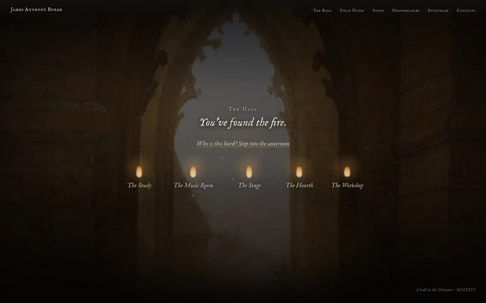
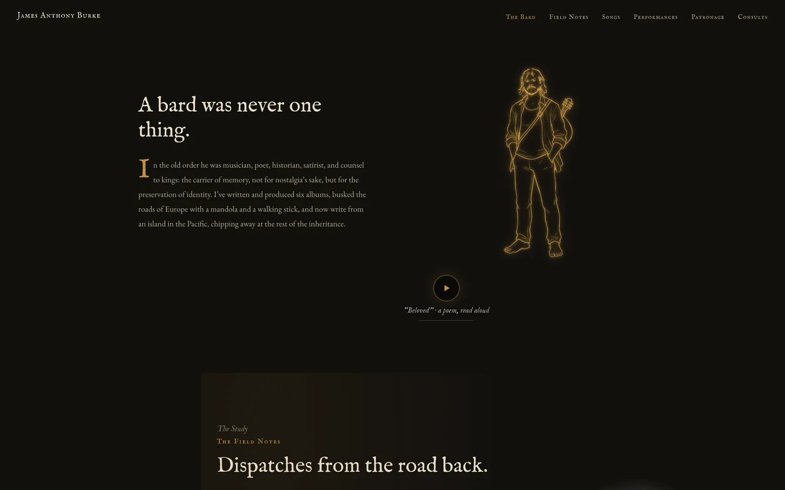

James Anthony Burke
Musician and writer
Story, design, copy, and build

James is a musician and writer with six albums behind him. He busked the roads of Europe with a mandola and a walking stick, and he now writes from an island in the Pacific. He calls himself a bard, and he means it precisely: in the old order a bard was musician, poet, historian, satirist, and counsel to kings.
Most musicians’ websites are press kits. If you take the word bard seriously, a press kit is the wrong container. A bard belongs in a hall, so I built him one. The site opens on a heavy door, and you scroll to push through it.

Inside, five flames burn: the Study, the Music Room, the Stage, the Hearth, and the Workshop. Each leads to a different part of his working life. His field notes live in the Study, his songs in the Music Room, his performance reels on the Stage, and his consults in the Workshop. The walls are old paintings of gothic interiors, kept dim so the flames carry the light.

The anteroom introduces the man: a line drawing of James rendered in candle glow, and his poem Beloved, read aloud in his own voice by the fire. The copy across the site is written in his register, from the section names to the sign-off at the bottom of the page.
All of it came from one conversation and a close read of his writing. He had already told everyone what he was. The site takes him at his word.